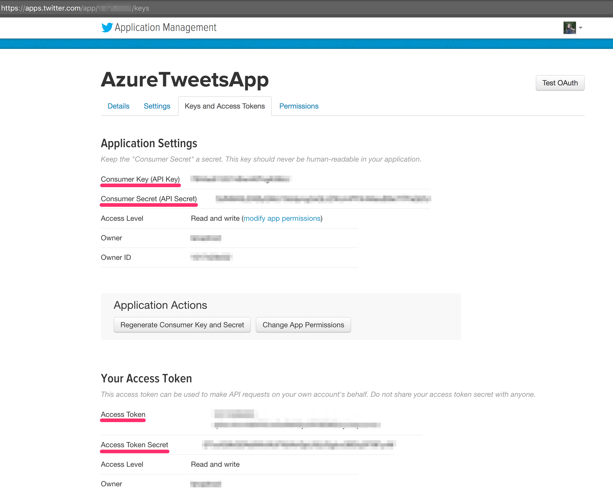

Introduction
There are quite a few systems that offer event ingestion and stream processing functionality, each of them has pros and cons. Learn about combining Apache Kafka for event aggregation and ingestion together with Apache Spark for stream processing!
What is covered in this article
- Why Kafka
- Why Spark
- Architectural overview
- Set up a Kafka cluster using Azure HDInsight
- Create a Kafka topic
- Set up a Spark cluster using Azure Databricks
- Peer Kafka and Spark virtual networks
- Create a Twitter application
- Write a producer of events to Kafka
- Consume events from Kafka topics using Spark
- Summary
Why Kafka?
Apache Kafka is a distributed system commonly described as scalable and durable message commit log. Kafka often acts as a reliable event ingestion layer, that can durably store and aggregate events coming from multiple sources, and that can act as a single source for different consumers to receive multiple types of events.
Topics, producers and consumers
Kafka has a concept of topics that can be partitioned, allowing each partition to be replicated to ensure fault-toletant storage for arriving streams. Kafka also offers exactly-once delivery of messages, where producers and consumers can work with topics independenly in their own speed. Producers can publish messages to one or more topics. Consumers can subscribe to one or more topics, read messages independently or as a group, from the beginning, end, or a specific offset in a topic. Kafka is known to be a very fast messaging system, read more about its performance here.Kafka could-managed alternatives
Apache Kafka is often compared to Azure Event Hubs or Amazon Kinesis as managed services that provide similar funtionality for the specific cloud environments. They have both advantages and disadvantages in features and performance, but we're looking at Kafka in this article because it is an open-source project possible to use in any type of environment: cloud or on-premises. Check out this article to learn more about using Event Hubs and Spark together.Kafka learning resources
Kafka The Definitive Guide is a comprehensive book about Kafka, that I really recommend.Why Spark?
Apache Spark is an open-source project for fast distributed computations and processing of large datasets. It operates primarily in memory and can use resource schedulers such as Yarn, Mesos or Kubernetes. Spark can perform processing with distributed datasets from external storage, for example HDFS, Cassandra, HBase, etc.
Use cases for Apache Spark include data processing, analytics, and machine learning for enormous volumes of data in near real-time, data-driven reaction and decision making, scalable and fault tolerant computations on large datasets. Examples may include analyzing events from sensors arriving with high frequency from multiple types of sources, performing near real-time processing and machine learning to determine health of the system and raising immediate notifications to act upon, and persisting all events into some data lake for historical purposes, and many more.
Spark connectors
Spark has a concept of “connectors” that help Spark interact with many systems to consume data from or to write data to. For example, to consume data from Kafka topics we can use Kafka connector, and to write data to Cassandra, we can use Cassandra connector.Spark cloud-managed alternatives
There are alternative stream processing solutions that run as a managed service in the cloud, like Stream Analytics that might be better integrated into Azure ecosystem in certain aspects and easier to get started with, but they might not be as feature-rich as Apache Spark is. There are a lot of open-source frameworks that provide similar functionality as Spark, but have differences in implementation, offered guarantees and features. Examples are Apache Flink or Apache Heron/Storm.Spark processing model
Traditionally and by default, Spark has been operating according to a micro-batch engine, where the data streams are processed as a series of small batch jobs with end-to-end latencies achieving 100 milliseconds at lowest and exactly-once fault-tolerance guarantees. Starting from the one of the latest releases of Spark, it now supports an experimental Continuous Processing mode.Quote from Spark documentation:
... end-to-end latencies as low as 1 millisecond with at-least-once guarantees. Without changing the Dataset/DataFrame operations in your queries, you will be able to choose the mode based on your application requirements.
Spark learning resources
Spark documentation is an informative starting point, and I also recommend a book High Performance Spark to learn about optimizing your code to achieve better performance with Spark.Architectural Overview
In this article, Kafka and Spark are used together to produce and consume events from a public dataset. Azure offers HDInsight and Azure Databricks services for managing Kafka and Spark clusters respectively. When creating an Azure Databricks workspace for a Spark cluster, a virtual network is created to contain related resources. Kafka brokers in HDInsight cluster are also created in a separate virtual network. How do we ensure Spark and Kafka can talk to each other even though they are located in different virtual networks?
Virtual Network Peering
Virtual network peering allows connecting two Azure virtual networks. After virtual networks are peered, resources in either virtual network can directly connect with resources in the peered virtual network. The traffic between virtual machines in the peered virtual networks is routed through the Microsoft backbone infrastructure, much like traffic is routed between virtual machines in the same virtual network, through private IP addresses only. Azure Databricks provides detailed instructions on how to peer virtual networks. But first of all, we need to create Kafka and Spark clusters!Set up a Kafka clsuter using Azure HDInsight
1. Pick a region, for example West US. Kafka and Spark clusters created in the next steps will need to be in the same region.
2. Pick a resource group name for the HDInsight cluster.
3. Run Azure Resource Manager template to create a virtual network, storage account and HDInsight Kafka cluster, using Azure CLI 2.0. Make sure to specify a unique Kafka Cluster name and passwords in the kafka-params.json file.
4. Follow these steps to “Configure Kafka for IP advertising". It will make sure Kafka brokers are accessible using their internal IP addresses instead of internal hostnames. In one of my next articles I will describe how to set up DNS name resolution for Kafka brokers to be able to access them using hostnames from Spark virtual network.
5. Take notes of Kafka broker IP addresses and Zookeeper server IP addresses, they will be required in future steps.
Go to the HDInsight Cluster dashboard (
https://<cluster-name>.azurehdinsight.net/), then to Kafka view, take note of IP addresses of Kafka brokers. Check each broker to get IP address that might look similar to 10.0.0.x.
Similarly, from the HDInsight Cluster dashboard (https://<cluster-name>.azurehdinsight.net/) choose Zookeeper view and take note of IP addresses of Zookeeper servers.
Create a Kafka topic in HDInsight
SSH to the HDInsight Kafka, and run the script to create a new Kafka topic.
Set up a Spark cluster using Azure Databricks
Azure offers multiple products for managing Spark clusters, such as HDInsight Spark and Azure Databricks. I've chosen Azure Databricks because it provides flexibility of cluster lifetime with the possibility to terminate it after a period of inactivity, and many other features. More information on Azure Databricks here.
Create a new Azure Databricks workspace and a new Spark cluster, as described here. Use the same region as for HDInsight Kafka, and create a new Databricks workspace. Don't forget to initialize environment (click “Launch workspace” on the resource page) after the workspace is created before creating a Spark cluster.
Peer the virtual networks
Perform the following steps to connect HDInsight Kafka and Azure Databricks Spark virtual networks. Kafka virtual network is located in the same resource group as HDInsight Kafka cluster. Azure Databricks virtual network is located under a resource group starting with databricks-rg. After peering is done successfully, you should see "Connected" peering status if you navigate to the "Virtual Network Peerings" setting of the main Azure Databricks workspace resource.
Add libraries to the Spark cluster in Azure Databricks
Add necessary libraries to the newly created cluster from Maven coordinates, and don’t forget to attach them to the cluster newly created Spark cluster.
- spark-streaming-kafka-0-10_2.11
- spark-streaming-twitter-2.11_2.2.0
Create a Twitter application
To send data to the Kafka, we first need to retrieve tweets. For that to work, it will be required to complete a few fields on Twitter configuration, which can be found under your Twitter App. If you don’t have Twitter keys - create a new Twitter app here to get the keys.
Create two Azure Databricks notebooks: KafkaProducer and KafkaConsumer
Create two Azure Databricks notebooks in Scala: one to produce events to the Kafka topic, another one to consume events from that topic.
Producing data
Change the following necessary information in the "KafkaProduce" notebook:
- Twitter credentials: consumer key and secret, access key and secret
- Kafka topic name
- Value for "kafkaBrokers" variable should use the list of Kafka server IPs (with 9092 ports) from one of the earlier steps
Consuming data
Change the following necessary information in the "KafkaConsume" notebook:
- Kafka topic name
- Value for "kafkaBrokers" variable should use the list of Kafka server IPs (with 9092 ports) from one of the earlier steps
Summary
In this article, we've looked at event ingestion and streaming architecture with open-source frameworks Apache Kafka and Spark using managed HDInsight and Databricks services on Azure. We have looked at how to produce events into Kafka topics and how to consume them using Spark Structured Streaming. Code can also be found here.
In one of the next articles, I'll describe setting up DNS name resolution with Kafka and Spark archirecture on Azure.
Connect
Thank you for reading! Follow me on Twitter @lenadroid or on YouTube if you found this article interesting or helpful. My direct messages are open, always happy to connect, feel free to reach out with any questions or ideas!